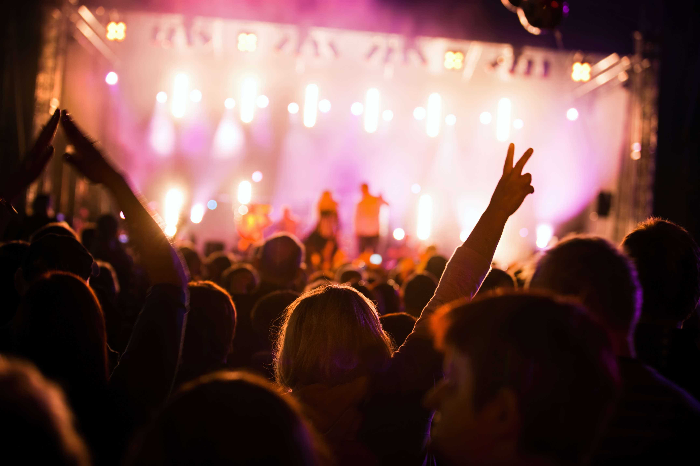

Interactive Festival Map
Click on an interactive map marker to scroll to event details and schedule!

The Bonfire
The main event of Valborg night! With a lake-side venue the fire that was historically lit to protect livestock from predators and ward off supernatural spirits during the seasonal transition, these fires now serve as social hubs where locals gather to hear choral music and speeches celebrating the return of the light. Marked by the symbolic burning of garden waste and a collective goodbye to the long Nordic winter we welcome you on April 30th!

The Musical Stage
At these lakeside Valborg celebrations, the music stage serves as the night's energetic focal point alongside the bonfire. While the evening begins with the formal, soaring melodies of traditional choirs and student "spring hymns," the atmosphere shifts as the fire roars to life. Modern stage shows often feature live bands, folk dancers, and contemporary artists to bridge the gap between ancient heritage and modern festival culture. From professional fire artists performing choreographed routines to local pop acts, the stage turns the historical "warding off spirits" into a vibrant public concert that keeps the crowd warm and dancing long after the embers start to fade.

The Food Stations
Food stations at Valborg lakeside events are designed to keep the crowd warm, featuring the iconic korv med bröd (hot dog in a bun) as the ultimate outdoor staple. You will often find stalls run by local scouts or sports clubs serving freshly made waffles, cinnamon buns, and coffee to combat the evening chill. In more festival-oriented venues, these stations expand to include seasonal favorites like nettle soup or hearty street food, providing a cozy, communal "fika" atmosphere that fuels the celebration from the first choral song until the last embers of the bonfire fade. for more food stall details below!

The Student Event
Nearby, the student celebrations—often spanning several days including "Kvalborg" (April 29)—are where the real energy is. This year the local festivities in Hälsoparken are massive, featuring a traditional Spring Speech and choir at noon, followed by the high-stakes "Sexkampen" (a playful pentathlon between student sections). The day peaks with outdoor DJ sets and a giant "Sillunch" (herring lunch), before the crowds migrate to the bonfire and eventually to the Akademien nightclub, which hosts an "Open Night" for students and friends alike to dance until the early hours of May 1st.